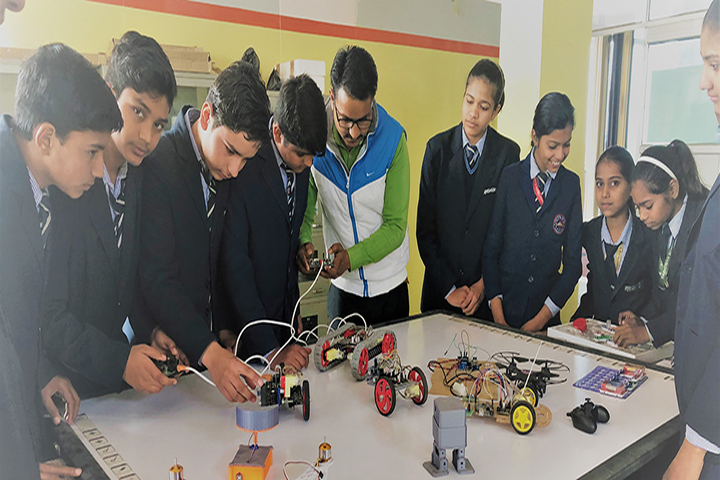

Education
➤ My academic odyssey took its initial steps at Shishu Niketan School, nestled in the heart of my hometown. It was within those walls that my passion for learning first ignited, laying the foundation for the exciting educational path I traverse today.
|
Reflecting upon those formative years, I'm grateful for the invaluable lessons learned and the joyous memories created during my time in primary school.
Those experiences have played an integral role in shaping my aspirations and molding the trajectory of my future. |
➤ The stepping stones of my academic voyage led me to Rashtriya Senior Secondary School, nestled in the heart of Khandora Rewari, Haryana. It was here that I found not only an education but a tapestry of friendships that enriched my life.
Those school years were an invaluable chapter in my journey, shaping my character and broadening my horizons in ways that textbooks alone could never achieve. |

|
➤Guided by the quest for knowledge, I spent two formative years at Allen Career Institute in Sikar City, Rajasthan, during my 11th and 12th classes.
 |
Those years were more than just academic pursuits—they were a period of transformation and growth. The lessons I learned, both inside and outside the classroom, played an integral role in shaping my approach to education and life itself. |